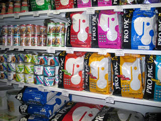
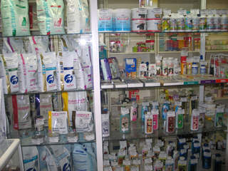

Зоомагазин "Том и Джерри"
Витамины (от лат. vita — «жизнь») — группа низкомолекулярных органических соединений относительно простого строения и разнообразной химической природы. Это сборная по химической природе группа органических веществ, объединённая по признаку абсолютной необходимости их для гетеротрофного организма в качестве составной части пищи. Автотрофные организмы также нуждаются в витаминах, получая их либо путем синтеза, либо из окружающей среды. Так, витамины входят в состав питательных сред для выращивания организмов фитопланктона. Витамины содержатся в пище (или в окружающей среде) в очень малых количествах, и поэтому относятся к микронутриентам. Наука на стыке биохимии, гигиены питания, фармакологии и некоторых других медико-биологических наук, изучающая структуру и механизмы действия витаминов, а также их применение в лечебных и профилактических целях, называется витаминологией.
В наших магазинах вы можете приобрести витамины для кошек, собак, хомяков и черепах. Витамины позволяют добавить в рацион недостающих элементов, так как питание в домашних условиях отличается от привычного питания в среде обитания животного. Для правильного применения витаминов в рационе питомца проконсультируйтесь с нашим ветеринаром(бесплатные консультации каждые понедельник, среда и пятница).
 